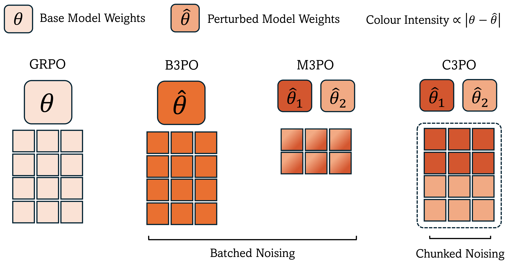
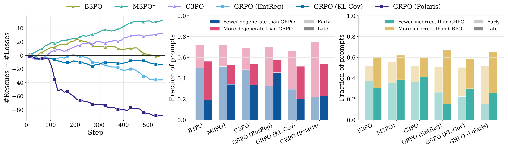
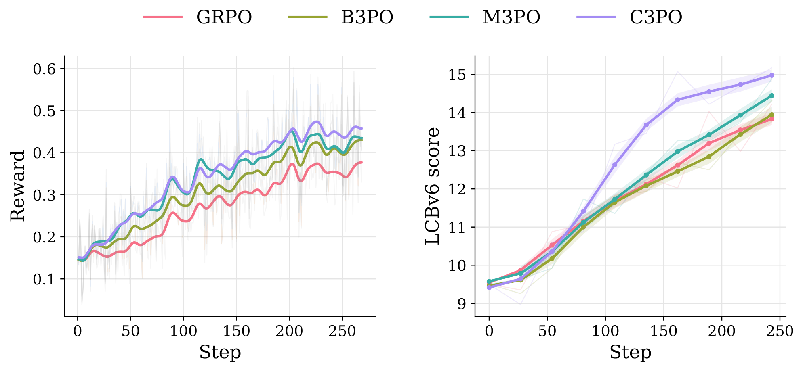
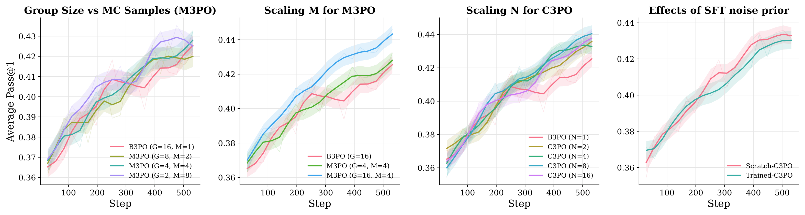

Exploration has been a focus of reinforcement learning research for a long time. Recently, there has been growing evidence that it is also an important ingredient in LLM reinforcement learning recipes that can significantly impact downstream performance. Many existing methods control exploration in the action-space, for example, using temperature scaling. However, these methods cannot reorder tokens but only influence the variance in the output distribution. This limits exploration and can lead to divergence or stalled training. Here, we investigate parameter-space exploration, where rollouts are generated by sampling different policies from a posterior that may each explore different rollouts. Sampling less or more diverse policies is then a complementary control lever over exploration. We introduce a family of methods called Perturbed Parameter Policy Optimization (3PO) which use different sampling strategies and different rollout grouping for reward estimation. Experiments on OLMo3-1025-7B and Qwen2.5-Math-7B across mathematical reasoning and code generation tasks show that these approaches consistently improve average downstream performance over standard GRPO at a near-identical FLOPs cost. Moreover, using multiple parameter samples consistently produces fewer zero-advantage groups and malformed or incorrect rollouts during training than GRPO and action-space baselines. Overall, our work presents evidence that parameter-space exploration can improve reinforcement learning for LLMs.

3PO trains with the IVON variational optimizer (Shen et al., 2024), which maintains a Gaussian posterior over the parameters whose per-parameter variance is inversely proportional to a learned diagonal Hessian \(h\), and draws policies from that posterior at rollout time:
\[
\sigma = 1/\sqrt{\lambda\,(h + \delta)}\,,
\qquad
\hat{\theta} = m + \sigma \odot z\,,
\quad z \sim \mathcal{N}(0, I)\,.
\]
The effective sample size \(\lambda\) therefore acts as a weight-space temperature: a complementary, tunable control lever over exploration. We study three noising strategies:
B3PO: a single weight perturbation \(\hat{\theta}\) is sampled per gradient step and synced with the rollout engine. The weight-space analogue of step-level temperature control, but dependent on a single weight draw.
M3PO: \(M\) perturbations are sampled per step; rollouts and advantages are computed separately for each, and the posterior is updated once with gradients averaged across all \(M\) samples, thus reducing variance. Requires additional compute to work well.
C3PO: each group of \(G\) rollouts is partitioned across \(N\) independently sampled policies, and advantages are computed on the full aggregated group, whose diversity now reflects \(N\) weight-space samples.
We warm-start OLMo3-1025-7B and Qwen2.5-Math-7B with SFT on reasoning traces, then run RLVR on DAPO-MATH-17k with an effective group size of \(G = 16\) rollouts for all methods. We report unbiased Pass@1 (mean and standard error over 8 samples) on six math benchmarks.
| Method | AIME '24 | AIME '25 | AIME '26 | MATH-500 | AMC | Minerva | Average |
|---|---|---|---|---|---|---|---|
| OLMo3-1025-7B | |||||||
| SFT | 16.68 | 21.05 | 12.70 | 78.07 | 51.12 | 30.51 | 35.02 |
| GRPO | 25.41 | 22.08 | 19.16 | 84.92 | 69.37 | 36.99 | 42.99 |
| GRPO (EntReg) | 23.75 | 23.33 | 17.91 | 84.60 | 68.43 | 36.58 | 42.43 |
| GRPO (Polaris) | 26.25 | 20.83 | 15.83 | 84.87 | 64.37 | 36.63 | 41.46 |
| GRPO (KL-Cov) | 24.16 | 24.58 | 16.25 | 83.87 | 66.56 | 38.28 | 42.28 |
| B3PO | 25.41 | 25.00 | 15.00 | 83.30 | 70.31 | 37.36 | 42.73 |
| M3PO | 25.83 | 24.58 | 17.91 | 85.05 | 69.37 | 36.58 | 43.22 |
| C3PO | 27.50 | 26.25 | 19.16 | 84.52 | 70.00 | 36.81 | 44.04 |
| Qwen2.5-Math-7B | |||||||
| SFT | 14.58 | 20.00 | 12.50 | 65.25 | 59.38 | 24.59 | 32.72 |
| GRPO | 24.17 | 25.42 | 20.42 | 88.20 | 70.62 | 43.38 | 45.36 |
| GRPO (EntReg) | 23.33 | 24.17 | 15.83 | 86.28 | 65.62 | 42.65 | 42.98 |
| GRPO (Polaris) | 22.92 | 26.67 | 21.25 | 87.75 | 72.81 | 43.29 | 45.78 |
| GRPO (KL-Cov) | 22.92 | 24.58 | 20.42 | 87.75 | 71.88 | 43.20 | 45.12 |
| B3PO | 23.75 | 25.42 | 24.17 | 87.68 | 72.81 | 43.34 | 46.20 |
| M3PO | 23.75 | 25.42 | 24.17 | 88.58 | 73.44 | 43.01 | 46.39 |
| C3PO | 25.00 | 27.08 | 26.25 | 88.10 | 71.25 | 43.61 | 46.88 |
Parameter-space exploration outperforms action-space baselines.
All 3PO variants beat entropy regularization, Polaris, and KL-Cov on average. Gains are concentrated on the harder AIME benchmarks, where C3PO outperforms GRPO by up to 4.2 points on OLMo3 and 5.8 points on Qwen2.5-Math.
Multiple model samples outperform a single sample.
B3PO's single weight draw does not meaningfully improve over GRPO on average, but M3PO's variance reduction and C3PO's group diversification do. C3PO is the best method on both model families, and its gain over GRPO is robust to run-to-run variance.

We pair each method against GRPO on the same prompts: a prompt is rescued if the method produces a correct rollout where GRPO's whole group failed, and lost in the opposite case.
3PO rescues more zero-advantage groups than it loses. Action-space methods do the opposite. M3PO and C3PO keep rescuing dead groups throughout training. B3PO has a positive effect in early training, but fails to sustain a learning signal in later stages.
Undirected action-space exploration buys diversity with poor rollouts.
Polaris' temperature increases yield rollouts with no extractable answer, EntReg's extra entropy is spent mostly on incorrect rollouts, and KL-Cov mixes both failure modes. M3PO and C3PO are the only methods that consistently produce fewer malformed and incorrect rollouts than GRPO, possibly because their trajectories come from plausible policies under the posterior rather than from uniformly flattened token distributions.

Training OLMo3 on verified coding problems with sandboxed execution rewards shows the same picture, but amplified: C3PO reaches a LiveCodeBench-v6 score of 15.17 versus 13.9 for GRPO, and 3PO reaches GRPO's final reward within the first half of training. We hypothesize that exploration matters more here because code generation is a harder task for the pre-RL model (9.5% on LCBv6, versus 35% average on math). This mirrors the AIME results, suggesting that parameter-space exploration is most valuable exactly where the base policy is weakest.

The noise scale \(\lambda\) is the key knob.
\(\lambda = 10^{9}\) is a good default: raise it to \(10^{10}\) if training collapses from too much noise, lower it toward \(10^{8}\) if training stagnates close to vanilla GRPO. Too much noise \((\lambda = 10^{8})\) collapses C3PO entirely.
More MC samples help, but not at a matched compute budget.
Under an equal-compute constraint, the variance reduction from more MC samples \(M\) is roughly cancelled by the shrinking per-sample group size. Lifting the constraint (\(M = 4\) with full \(G = 16)\) substantially outperforms both. For C3PO, even \(N = 2\) policies per group beats single-perturbation training, with \(N = 2\text{-}4\) a good default.
Our methods work as a drop-in replacement for GRPO.
Initializing the posterior variance from a constant Hessian \(h_{0}\) performs on par with loading the learned SFT optimizer state. 3PO is compatible with any off-the-shelf model checkpoint on a vendored verl codebase.
@article{venkatkrishna2026parameter,
title={Parameter Exploration for RLVR via Variational Learning},
author={Vatsal Venkatkrishna and Nico Daheim and Iryna Gurevych},
year={2026},
eprint={2608.09805},
archivePrefix={arXiv},
primaryClass={cs.LG},
url={https://arxiv.org/abs/2608.09805},
}